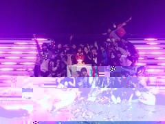
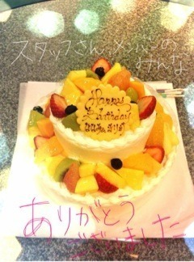
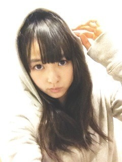
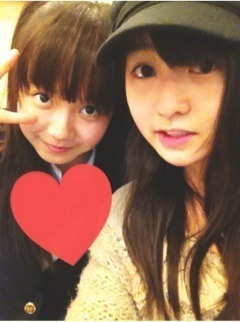
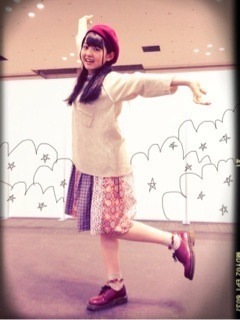
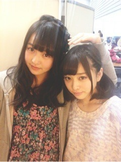
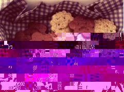
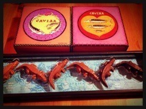

2013/0221Thu367回目*marika
今日はライブリハでした！
もうすぐ本番。
本番余裕持てるように
全部頭に入れなきゃ。
リハ終わったあと、スタッフさんに
呼ばれて集合しました。
怒られると思ったら
サプライズでした。
珍しくななみが泣いてました。
私どすっぴんでちょっとでも
整えればよかった。

びっくりして嬉しくって
お腹痛かったです。
ななみ「まりかおめでとう！」
まりか「そっちこそ」
ななみ「やられた...」

みんなだいすき！！！
まりか
2013/0220Wed366回目*marika
2013.2.20 0:00
17歳になりましたー！
せべんてーん
16歳は今まで生きてきて
いちばん濃かった一年間でした。
去年の今頃と比べたら変わったな。
たくさんの人に支えられて
ここまで成長することができました。
感謝の気持ちでいっぱいです。
乃木坂familyのみなさんが
だいすきです！
17歳は、もっともっともーーっと
濃い一年になったらいいな。
17歳ってさ。
よく言う「永遠の17歳」
とかあるじゃない？
きっと17歳が大人と子どもの境目。
いちばん青春できるときだ！
チャンス
乃木坂のメンバーとしてもっと
お仕事を充実させたい！
大人になって
「17歳は充実してたなあー
楽しかったなあー」
って思えたらいいな
忘れられない素敵な一年間に
なれますように。
色気ほしいとか言いません笑
私らしくがいちばんだわね。←
いつもありがとうございます。
これからもよろしくお願いします。
ブログ更新頑張ろ！
ピチピチの17歳
伊藤万理華より
2013/02/20 00:00｜個別ページ｜コメント(1070)
2013/0218Mon365回目*marika

今日はお仕事とリハでした。
昨日から花粉きた！鼻が...
助けて...
......
コメントたくさん！
握手会、生誕祭の感想
ありがとうございます
生誕祭ね！
誰だよ！って感じだった
本当にカメラ嫌いでした。
異常な恥ずかしがり屋でした。
友達とプリクラ撮るなら
大丈夫だったけど...
中学生になって徐々に撮られても
笑顔になってきたかな笑
バレエ懐かしかったなあ...
水色の衣装着て踊ってたのは
中2のときだよ。
ウィッグかぶってぴょんぴょん
跳ねてたのは高1の夏！
オーディション受けながら
発表会してたんだよー
懐かしい...
もしバレエ習ってなかったら
首が短いままだったかも。←
もし乃木坂のオーディション
落ちてたら撮られることを
嫌がってたと思う。
バレエだいすきだから
できなくなるのは辛かったなあ。
今考えてみたら、
オーディション合格したの奇跡！
今は撮られるのが好きになったよ。
カメラだいすきなのよ。ふへへ
バレエも乃木坂46も
私にとって大切な出会いです。
私が変わることができた
大きな出会いです。
なんかまじめな話になっちゃった！
まだ誕生日迎えてないのに

レッスン後のなかいさん
まりか
2013/0217Sun364回目*marika
横浜、京都。
2日間の握手会
来てくださったみなさん
ありがとうございました！！
列が途切れなかったのに
感動しました...
こんなにたくさんの人が
握手しに来てくださるなんて
もう幸せ 幸せいっぱい
幸せいっぱい
幸せいっぱい誕生日のフライング
お祝いしてくださって
本当に嬉しかったです♪
3日後あらためてごあいさつします^^
＼私服／
 横浜
横浜3部はパーカー着てフードかぶって
チャック締めてたから地味だった。
というかシュールだった
4部5部はらしくないチュニックとか
ミニ丈とかブーツとか...
バレンタイン意識！女子！←
京都
3部はベレー帽なしで三つ編み
4部はこんな感じです。
これはいつものまりっか
まりっ会のみなさんはやっぱり
こっちのが落ち着くかしら？
私はこっちのが断然落ち着くけど笑
22日のライブ行くよ！
って報告してくださる方たくさんいて
嬉しいなあ。楽しみにしててね♪
.........
*****HaPPy BirThDAy*****
ちはる♡2013.2.17
私とちはるって顔がよく動くみたい。
「うちら乃木坂一表情筋動くよね！」
って話してたの笑
だから今度表情筋対決したい←
本当美形なのよね！
なんであんなきれいなん？
書道上手は最近知ったけど他にも
何か隠してるんじゃないかって
興味しんしんなの
踊ってるときのちはるもだいすきよ。
年下なのにお姉ちゃんみたいだよ笑
おめでとう
.........
＼久しぶりにちゃんず／

今日の乃木どこ2月生誕祭
はずかしいけど見てね！
あ、やっぱり見なくていいや！←
では明日もがんばりまりか
まりか
2013/0215Fri363回目*marika
ありゃりゃ。
15日になっちゃったー
「君の名は希望」MV公開されました！
完全版はまさかの25分。
レッスンで選抜メンバーが
この曲踊ってる姿を見て
すごくすごくすごく心にしみた。
本当に素晴らしい曲。
.........
昨日は学校の友達から、メンバーから
お菓子もらって幸せいっぱいでした。
ぬふふ。
まーまりっかモテモテだからなー ...
...
...みんなすごいよ！
だってケーキみたいなのとか、
かわいくて凝ってるのとか...
作ってきたんだよ？！すご！←
まりっかも作ったけどな(どや
本当の話。夜中作ってたら
いつの間にか朝になってました。
一睡もしてません。きゃー

クッキー。これ、失敗作。
メンバーに配ろうと思ってたのに...泣
顔も描いたのに...
きな粉とココア。
ココアが苦すぎて
びびびびびっくりした
味を文で表現するなら、
ココココココアって感じ。
リベンジでまた作って
メンバーに配ります。
チョコもちゃんと作ったよ。
メンバー、スタッフさん
全員に渡せなくてなんかいろいろ
失敗しちまった。
これはみなさんへ
はっぴーばれんたいん
苺のトリュフとなんかよくわかんない
上にドライフルーツのせたチョコ
...いや、美味しかったよ！

ママからもらったチョコー
わにーーーーーーーーーー
上のふたつはカンカンの絵が
めっちゃかわいいんです。
かわいかったからお兄ちゃんのも
一緒に載せた笑
カンカンの中にキャビアみたいな
チョコがいっぱいなの！わお
ママありがとう！
家族は失敗作のクッキー
食べられなくはない。美味しい
って言ってくれたけど伊藤家は
甘党じゃないからなあ...うん。
よし！リベンジ！！！！！
まりか